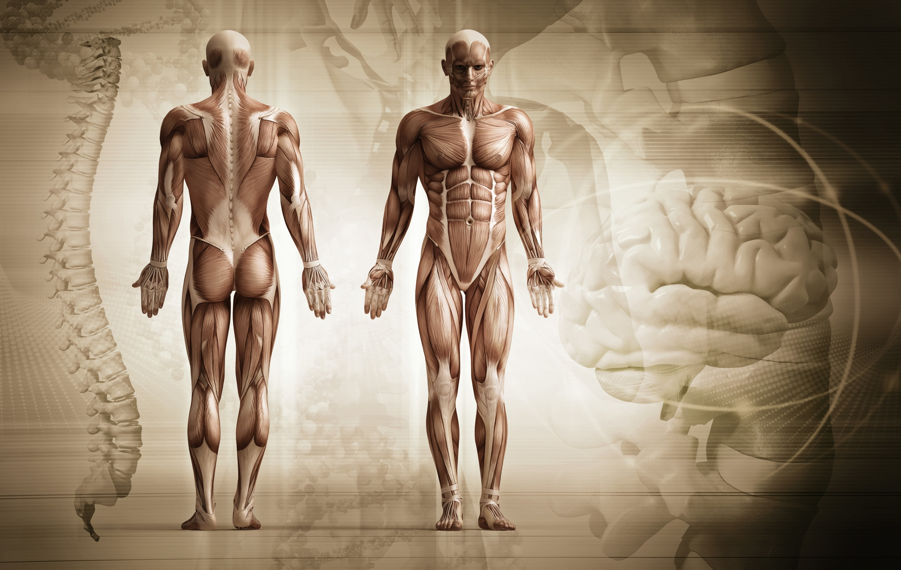
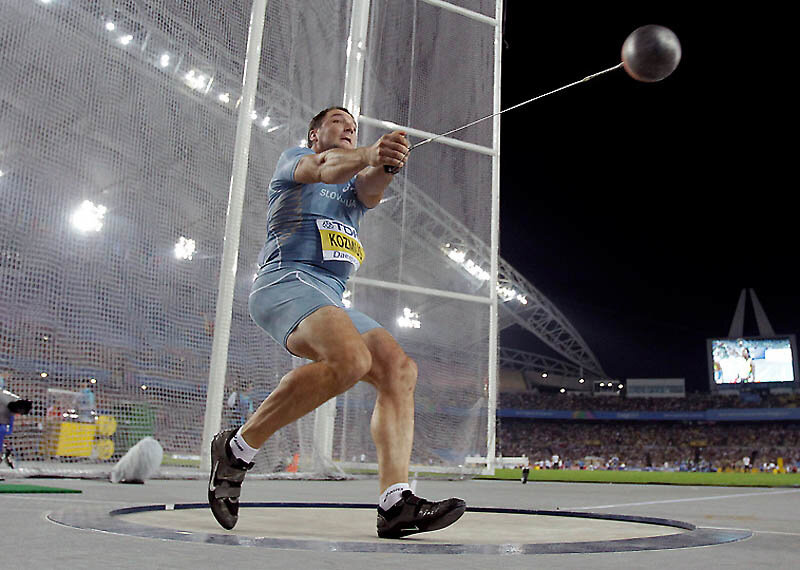

1. Какие особенности организма могут являться задатками двигательных способностей?
2. Различают пять основных двигательных способностей:
3. С чего обычно начинают самостоятельные занятия физическими упражнениями?
4. В разминку перед началом выполнения основных физических упражнений стоит включить…
5. Гибкость - это…
6. Сила - это…
7. Сколько раз в неделю нужно выполнять упражнения на развитие силы?
8. Что является основным условием для развития силовых способностей?
9. Что такое быстрота?

10. Какое из приведенных упражнений развивает и силу и быстроту?
11. Какое условие из приведенных является необходимым для развития быстроты?
12. Выносливость - это…
13. Какое упражнение из приведённый можно назвать циклическим?
14. Что такое ловкость?
15. Наличие ловкости способствует развитию таких важнейших качеств личности, как…